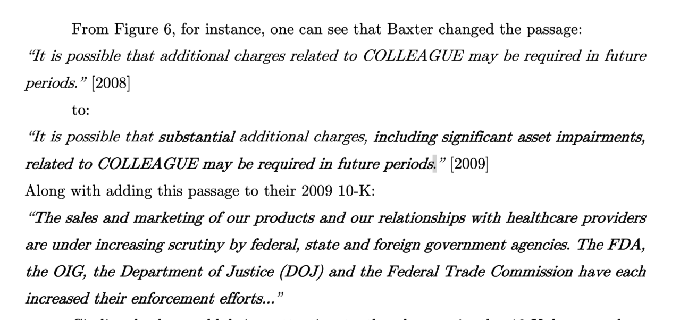
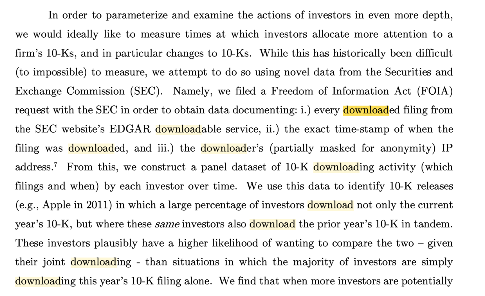
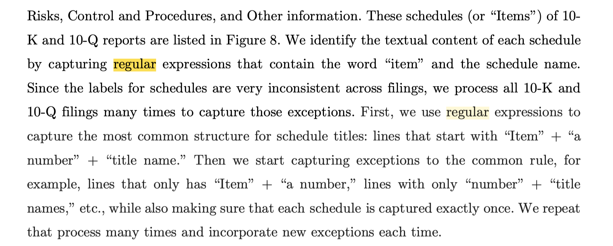
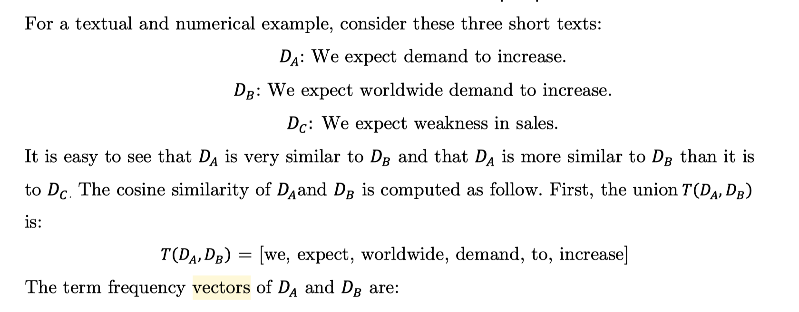
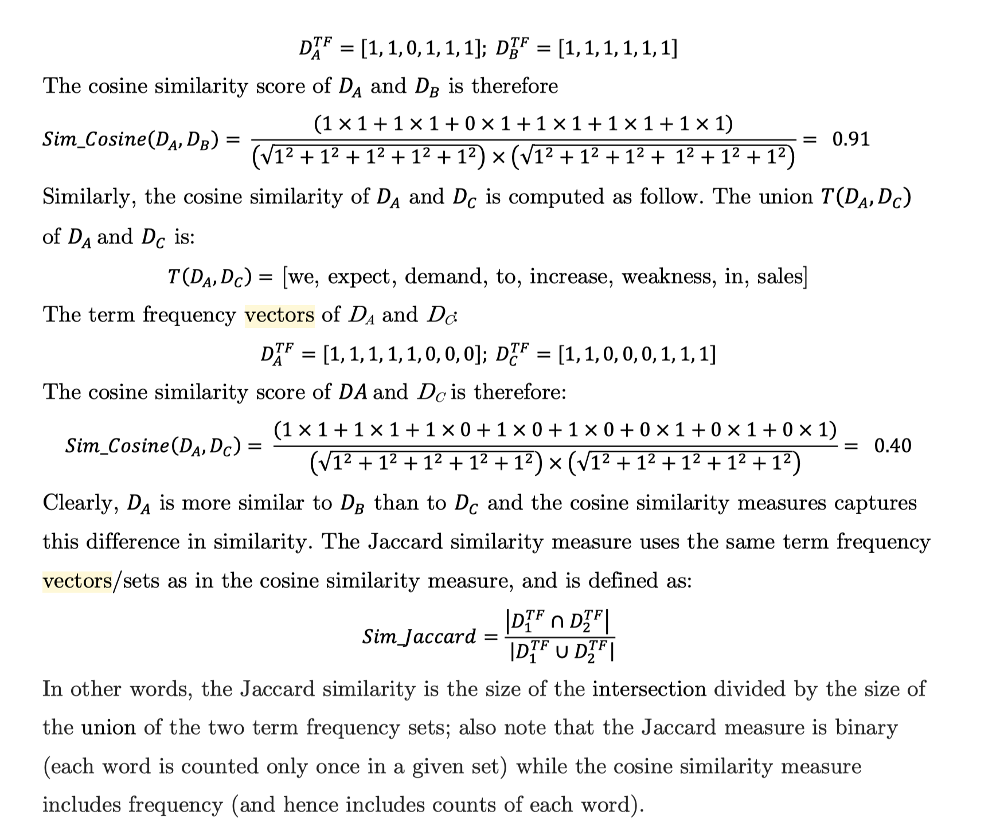
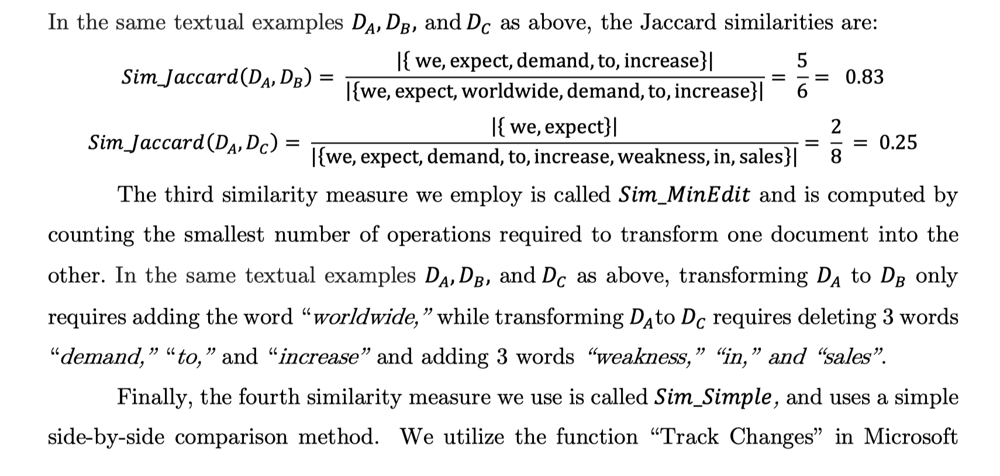
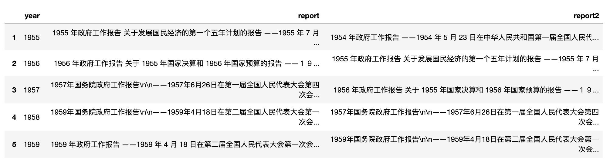
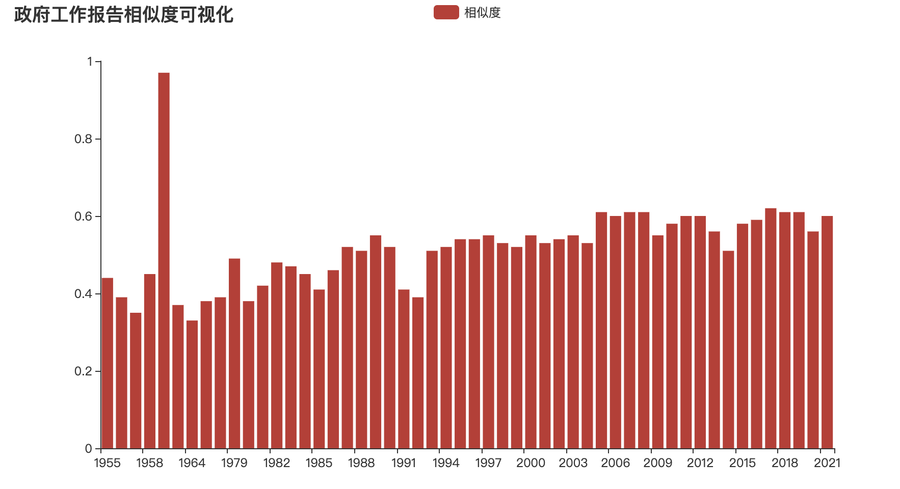

文献
Cohen, L., Malloy, C. and Nguyen, Q., 2020. Lazy prices. The Journal of Finance, 75(3), pp.1371-1415.
摘要
使用1995年-2014年所有美国公司季度和年度申报的完整历史记录，研究发现当公司对报告进行积极更改时，这种行为蕴含着公司未来运营的重要信号。
财务报告的语言和结构的变化也对公司的未来收益产生重大影响：做空"变化"的公司（持有的公司，如果其报告发生变化的，做空该公司股票），买入“不变化”的公司，使用这样的投资组合策略，在2006年的每月alpha值高达1.88%的收益（每年超过22％）。报告中涉及执行官（CEO和CFO）团队的话语风格的变化，或者有关诉讼(风险部分)的话语的变化，都对投资的未来收益有重要作用。
研究发现，对10-K的变化可以预测未来的收益、获利能力、未来的新闻公告，甚至未来的公司破产。同时，不做任何变化的公司将获得显著的异常收益。与资产价格典型的反应不足研究不同，我们发现没有任何与这些变化相关的公告效应–仅在后来通过新闻，事件或收益披露信息时才产生回报–暗示投资者并未注意到整个公众领域的这些变化。
研究背景
之前的研究认为，尽管投资者一次对包含重大变化的财务报表的发布作出了迅时反应，但随着时间的流逝，这种公告作用是会减弱的(Brown and Tucker, 2011 and Feldman et al., 2010)。这表示10-K报告会随着时间推移，信息价值大打折扣。尽管我们复现了这个事实，即与常规文件的变更没有重大的公告效应，但我们认为，前人的研究忽略了更重要部分(如MD&A)对对资产价格的影响。
确切的说，并不是报告的披露效应的信息价值变低了，而是投资者越来越难以发现报告中微妙的信息变化， 比如因为报告变得越来越冗杂。投资者只有看到某些新闻后，才会逐渐意识到之前公司报告内容变化的的真正价值。
例如Baxter公司
- 纽约时报在 2010年4月23日 发了一条FDA将有对输液泵(infusion pumps)更严格对审批管理规定的新闻，新闻中提到了Baxter公司。新闻公布当天，Baxter股价大跌。
- 10天后的（2010年5月4日），Baxter宣布召回问题的输液泵产品，股价当天再次大跌。

两次负面新闻导致Baxter股价大跌超过20%，最有意思的是Baxter公司一个多月前（2010年2月23日）10-k报告中 提到 了与这两条新闻类似的 线索。

截图中写着 Baxter的产品COLLEGUE未来可能面脸额外的处罚，而且相关销售面临着FDA、OIG、DOI和FTC越来越严格的审批，面临的执法强度也越来越大。
因纽约时报发布的消息，股价大跌。但是大跌之前Baxter的10-k报告中似乎提示未来公司可能面临的风险，但是投资者怎么没有注意到这个重要线索呢？
数据获取与分析方法
这篇文章用到了很多 文本数据挖掘 方法，如
- 数据采集(报告下载和信息监测)
- 正则表达式（数据分割与抽取）
- 文本相似度(计算报告变化程度)
我大致说下这几部分技术在这篇论文中的应用。
1. 数据采集
这篇论文研究者认为，只有投资者意识到本期报告和上一期报告做对比，才能发现报告变化，进而对股价有影响。所以当有新公告公布后，投资者是否下载本期报告的同时顺带着下载上一期报告，下载量又是多少。
下载量可以从Freedom of Information Act下载，

可以拿到的信息包括:
- 报告文件
- 报告下载时间
- 报告下载的IP地址(可以通过这个ip来当作投资者的id)
2. 正则表达式
一个公司报告文件会有不同部分，我们需要将不同的部分分别识别出来。这里用到正则表达式，可以进行快速的数据清洗和数据抽取。

3. 文本相似度
文本转为向量后就可以进行相似度计算,
  
这里使用我开发的cntext包，可以实现cosine和jaccard相似度的计算。
import cntext as ct
A = 'We expect demand to increase.'
B = 'We expect worldwide demand to increase.'
C = 'We expect weakness in sales'
print(ct.cosine_sim(A, C))
print(ct.jaccard_sim(A, B))
Run
0.40
0.83
如果对Baxter公司多个年度对报告进行相似度计算，绘制成图就会发现2010年与前后变化很大。相似度越低，说明公司报告前后变化很大，应该引起投资者注意，如果能注意到就会避免纽约时报导致到股价暴跌。如下图

案例实现
由于没有完全一样的数据，这里使用政府工作报告数据类比，使用cosine相似度画出趋势线条。
使用相似性识别变化的时间点
准备数据
政府工作报告 http://www.gov.cn/guowuyuan/zfgzbg.htm
prc_reports.xlsx 链接:https://pan.baidu.com/s/1sVU3mkEcP7Z3_hbG5AVNUA 密码:zjrq
将下载好后的 prc_reports.xlsx 文件放置于 .ipynb文件 所在的文件夹内。
import pandas as pd
df = pd.read_excel('prc_reports.xlsx')
df.dropna(inplace=True)
df.head(10)
Run

计算相似度
运行时间大概30s， 运算结果是列表数据 cosines
import cntext as ct
cosines = []
#row Series
for idx, row in df.iterrows():
text1 = df.loc[idx, 'report']
text2 = df.loc[idx, 'report2']
simi = ct.cosine_sim(text1, text2)
cosines.append(simi)
cosines
Run
[0.44', '0.39', '0.35', ... '0.62', '0.61', '0.60']
绘制柱状图
from pyecharts.charts import Bar
from pyecharts import options as opts
from pyecharts.globals import CurrentConfig, NotebookType
CurrentConfig.NOTEBOOK_TYPE = NotebookType.JUPYTER_NOTEBOOK
bar = Bar()
bar.add_xaxis(xaxis_data=[str(y) for y in df['year'].values])
bar.add_yaxis("相似度",
cosines,
label_opts=opts.LabelOpts(is_show=False))
bar.set_global_opts(title_opts=opts.TitleOpts(title="政府工作报告相似度可视化"))
bar.load_javascript()
bar.render('政府工作报告相似度可视化1.html')
bar.render_notebook()
Run

解读
从图中可以看到除1959年异常外，其他方面能挖掘出很多信息。从相似度整体趋势，
1959-1992 第一阶段， 1992-至今 第二阶段
1992年附近，第一次确立社会主义市场经济制度。之后的岁月里一直围绕着经济建设高速发展。
同时也可以看出在第一阶段前期相似度异常的低，可以理解为新中国初建，百废待兴，对于建设者而言，组着和管理这个国家的政府也在学习如何建设新中国。而90年代后，相似度越来越高，体现了政府越来越熟悉如何治理国家，如何搞经济建设。